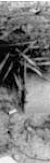
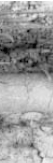
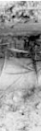
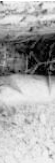
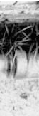
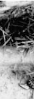
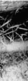
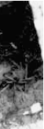
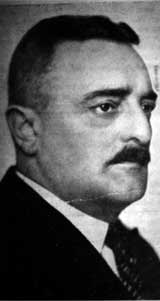
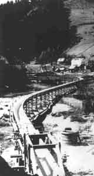

| |
| Reports |
| a |
| Self-organizing
flow technology |
Introduction
This report is an attempt to understand and learn from the ideas and
inventions of the Austrian forester Viktor Schauberger. Viktor
Schauberger already in the 1920s warned about environmental crisis, at
a time at which it was not, as today, something recognized. During his
lifetime, he encountered resistance and ridicule, and his perspective
may still today be labelled as unconventional and unorthodox, although
much of what he wrote about our handling of waters and forests today is
more relevant than ever. As he wasn't an academic, but was more of a
natural philosopher, he had trouble to communicate his ideas with
contemporary scientists. In this report, we'll try to show how modern
research in chaos and self-organizing systems give us a possibility to
shed some new light on Vikor Schauberger, and perhaps establish a
deeper understanding of the phenomena he described.
Viktor Schauberger
We will call our perspective self-organizing
flow, so called since the technology described exploits the intrinsic
order spontaneously created by a system, during the right conditions.
Such a view was advanced in the 1920s by the Austrian naturalist Viktor
Schauberger (1). Schauberger was a
forester and timber-floating expert. He was no academic, but he had a
long tradition of studies of nature to rely on. He also had rich
opportunities to study the processes of nature in untouched areas, when
it came to the handling of watercourses and the quality of water. His
approach was that man should study nature and learn from it, rather
than trying to correct it --- a view that was rather controversial at
his time (1). He noted that mankind had a
developed technology for exploitation of water, but still knew very
little of the processes of natural waters, and the laws for their
behaviour in an untouched state.
Schauberger gave the following example: In a mountain stream he
observed a trout which apparently stood still in the midst of rapidly
streaming water. The trout merely manoeuvred slightly, looking rather
free from effort. When it got alerted it fled against the stream ---
not with it, which at first sight would have seemed to be more natural.
On some occasions a cauldron of warm water was poured into the stream,
quite a long distance upstream from the fish, for a moment making the
river water slightly warmer. As this water reached the fish, it could
no longer sustain its position in the stream, but was swept away with
the flowing water, not returning until later. From this experiment
Schauberger concluded that temperature differences is of great
importance in natural river systems. He even tried to copy the effect
of the natural movements of the trout in a kind of turbine, which he
coined trout turbine.
By studying the gills of the fish (1),
Schauberger found what looked like guide vanes. These, he theorized,
would guide streaming water in a vortex motion backwards. By creating a
rotating flow, a pressure increase would result behind the fish, and a
corresponding pressure decrease in front of it, which would help it to
keep its place in the stream (2).
Schauberger constructed a series of extraordinary log flumes that went
against the conventional wisdom of timber floating of his time. They
didn't take the straightest path between two points, but followed the
meandering of valleys and streams, see Figure 1:1. In these flumes,
guide vanes were mounted in the curves, making water twist in a spiral
along its axis. This fact, together with a meticulous regulation of
water temperature along the flumes and waterways used, made it possible
to float timber under what was traditionally regarded as impossible
conditions, i.e. with significantly less water needed than
traditionally, over long distances and with a transport rate which
significantly exceeded what was considered normal. It was even reported
that timber more heavy than water could be floated (3)
--- timber that would sink to the bottom under normal conditions.
Remnants of these flumes and floating arrangements still exist today,
and can be observed at different locations in Austria.
Knossos water supply
It is interesting that a water supply
technology that displays some similar characteristics can be found on
Crete, at the remnants of the ancient Minoan culture.
        |
1.2: Some of the conical water
pipes at Knossos. From the western part of the palace, close to the
grain silos.
Early in the 20th century, Arthur Evans discovered and restored the
palace of Knossos, situated at Kefala hill at the center of Crete. The
oldest parts stem from around 2100-2000 BC. On the walls vortexes and
spiralling patterns abound --- one wall drawing e.g. shows a Karman
vortex street --- displaying that swirling water inspired the
inhabitants of the place (11). Water
certainly was central in Minoan mythology --- and treated as something
sacred.
The water supply system is especially interesting. Conical pipes made
of terra-cotta, where the narrow opening of each pipe section sticks
well into the wide opening of the next section were used, see Figure
1.2. Apart from making it easy to lay out the pipes in a curved
fashion, the tapered shape of each section has given the water a
shooting motion (4) which would have
assisted in preventing the accumulation of sediments. As noted by
Evans~\cite{Evans}, this would make them more advanced than nearly all
modern systems of earthenware pipes, which have parallel sides. One
stretch of pipes even showed an upward slope, indicating that Minoan
engineers were well aware of the fact that water finds its own level.
In some channels for water, braking vanes, to brake the water at the
outer curves can be seen (2).
The Stuttgart experiments
This report is based on the experiments made by Viktor Schauberger and
Prof. Franz Pöpel at the Institute of Technology in Stuttgart in
1952 (31). One of the objectives of
these experiments was to investigate the possibility of using different
kinds of pipes with rotating water, in order to separate the water
phase from a suspension of hydrophobic material.
The underlying idea was to use a vessel connected to a straight pipe
from below. Water was injected tangentially and was allowed to swirl
down into the pipe. A vortex would appear, and particles in the
swirling flow would accumulate at the center of the vortex, where the
pressure was the least. With suitably designed pipes it was then
possible to separate the hydrophobic material.
The importance of the design of the inlet vessel was also studied. By
using a rectangular and a round vessel, two rather different cases
could be studied. Not only straight pipes were used, but also conical
and spiralling pipes were used. Pipes made of different materials, such
as glass and copper, were studied as well. The experiments were
extended into investigating the frictional losses of different pipes
and materials.
The results were rather astonishing. Schauberger and Pöpel
observed that the frictional resistance decreased the more conical and
spiralling the pipes were made. Pipes made of copper had a lower flow
resistance than pipes made of glass. The spiralling copper pipe
produced an undulating friction curve as the flow was increased. At
some flows a negative friction was observed, as if water seemed to lose
contact with the walls and fall freely through the pipe. How to
interpret this remains to be seen.
A basic principle that can be deduced from the Stuttgart experiments is
a rotation of water around its own axis, while it is flowing along a
spiralling path with decreasing radius. The rotational velocity
increases towards the center where a sub-pressure exists.
Let us study a "bath tub vortex" to illustrate the issue at hand. With
a slow enough flow water flows more or less straight down into the
pipe. But at a critical flow a transition takes place, a bifurcation,
and water starts to swirl in a vortex.
In order to make water organize itself into this kind of flow, we only
have to create the right conditions, which in turn will generate the
spontaneous emergence of a subpressure axis. This could be arranged by
using a suitable geometry of the vessels, or by introducing different
kinds of guide vanes, pressure sinks etc. (More generally, we have to
look at the system and its interaction with its surroundings as a
whole.) The system then is in a state of dynamic equilibrium, where it
is always changing but where its structure is yet stable.
A new perspective
This is a perspective that is very similar to that of Viktor
Schauberger's way of reasoning. He early observed that untouched
watercourses had a kind of structural stability. From those
observations he suggested methods for river regulation --- based on the
perspective of giving water impulses for self-organization to take
place. By using suitable guide vanes and by taking into account the
effect of the surrounding vegetation on water flow and temperature, he
could make a watercourse self-organize into a stable riverbed.
This way of regulating rivers and watercourses differs from the
traditional, which tries to steer the flow, and which disregards the
'eco-system' which the flowing water and its interaction with riverbed
and vegetation makes up --- with floods and bank erosion as the natural
result. Schauberger e.g. noted that the sediment transport capacity of
the flow affected sand and bank development, which affected vegetation,
which in turn affected the flow image of the water, through among other
things the vegetation's cooling effect. The system bites itself in the
tail, as it were.
A problem has been to interpret the language of Schauberger, as it was
more that of a naturalist than of a hydrologist. He more looked at the
wholeness of the system, than to its detailed composition, and focused
on its flow image, without knowing or modelling the underlying
mechanisms.
Such a perspective does not look for as detailed a model as possible,
but for the simplest model that has the same kind of fundamental
properties as the system. It is a perspective that is close to that of
modern chaos science. It has shown that disparate and seemingly complex
behaviours often can be captured by (ridiculously) simple models (5). This is due to the fact that dynamical
behaviours at e.g. phase transitions are universal, and appears in a
wide range of systems (14, 43). This is
the perspective we will bring with us, as we in this report reinterpret
and re-examine parts of the Stuttgart experiments and some of the
possible applications. We will replicate some of these experiments, and
from this try to evolve useful models, which can help to bridge the
perspective of Viktor Schauberger with that of the modern natural
sciences. This leads naturally to some of the main applications ---
water treatment and restoration of watercourses. We will take a closer
look at these in this report.

Footnotes:
(1) This was at a time when central European forests were cut down at
large scale and, as a consequence, mountain streams were clad in
concrete in order to limit the severe erosion by floods).
(2) E.g. a pulsating jet of toroidal vortexes could develop, aiding the
fish in thrusting against the stream. Schauberger also held the view
that small amounts of trace materials, such as copper, were significant
in these processes.
(3) Winter hewn beech and larch
(4) By giving the peripheral water a vaulting toroidal flow.
(5) Consider by contrast the complexity of a traditional approach at
modelling a highly non-linear system such as free surface flow with an
air funnel.
Litterature references:
(1) Alexandersson, Olof, Living water, Gateway Books, 1990
(2) Alexandersson, Olof, Private communication
(11) Evans, Arthur, The Palace of Minos --- a comparative
account of the successive stages of the early Cretan civilization as
illustrated by the discoveries at Knossos, Vol. 1, London, 1921, p.
141-43, 225-230, 371-75 and Vol. 3, London, 1930, p. 233-61
(14) Gleick, James, Chaos --- Making a new science, Viking
Penguin, N.Y., 1987
(31) Pöpel, Franz, Rapport över preliminära
undersökningar av spiralrör med olika form, Institute of
Ecological Technology, Sweden, 1986. (Originally published as, Bericht
über die Voruntersuchnungen mit Wendelrohren mit verschniedener
Wandform} Internal Report, Institut für Gesundheitstechnik,
Institute of Technology in Stuttgart, 1952. Published in English in,
The Energy Evolution, Viktor Schauberger & Callum Coats (ed.), p.
222-47, Gateway Books, Bath, 2000)
(43) Waldrop, M. Mitchell, Complexity: The Emerging Science
at the Edge of order & Chaos, Penguin, 1992 |
|
If you
want to read the report in its full length you can order it from the Books & Reports
|
|
|
 |
| Viktor
Schauberger |
| |
| |
| |
 |
1.1:
One of Schau-berger's log flumes. Note the egg-formed section, and how
the flume meanders like a stream.
The Krampen-Neuberg flume in Austria, 1930s |
|
|
|
|